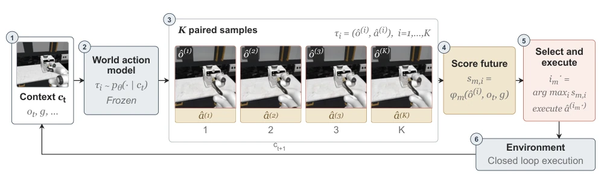
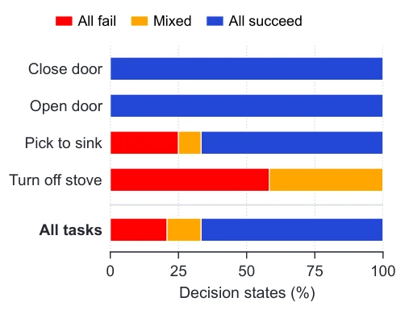
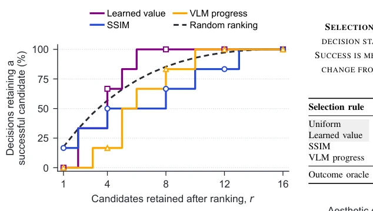
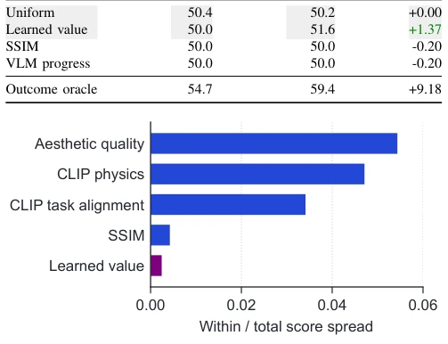
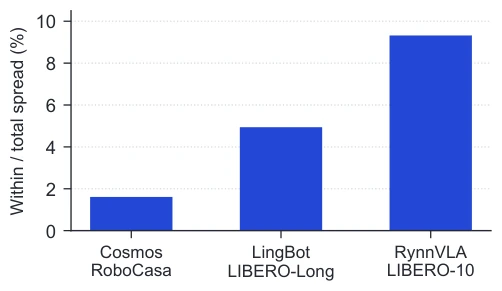
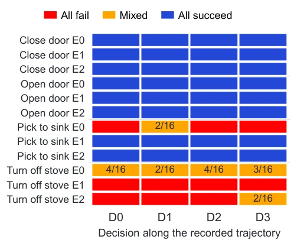
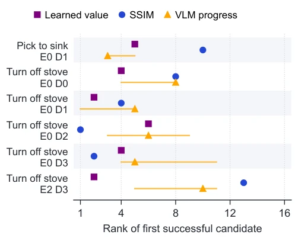
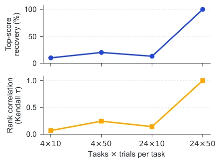

Fig. 1. Substantial potential remains in action planning. Searching among sampled actions with access to their ground truth outcomes indicates substantial potential to improve task success. However, the tested learned value estimates, visual scores and VLM judgements leave much of this potential unrealised as the number of candidates increases. This offline comparison ranks the same candidate sets at identical states under a common continuation policy. Coincident curves have equal success.

Fig. 2. Best of K selection as a controlled study. Context ct includes the current observation ot and task instruction g. A fixed WAM draws pairs τi = (ˆo(i), ˆa(i)) of a predicted visual future ˆo(i) and the executable part ˆa(i) of its associated action sequence. Rule m computes sm,i = ϕm(ˆo(i), ot, g), selects i⋆ m = arg maxi sm,i, executes ˆa(i⋆ m), and advances the environment to context ct+1 for closed loop execution. The samples show one recorded RoboCasa decision. Generation and execution remain fixed across rules, isolating the choice of score.
Fig. 4. Visual evidence available to the selector. Each row shows the current observation and four sampled visual futures. The upper example is closest to the median pairwise pixel error among 194 decisions, while the lower example has the largest error. Their errors are 0.44% and 1.96%. Purple borders indicate the candidate preferred by the learned value and do not denote task outcome.

Fig. 5. Selection can change success only at mixed decisions. This 4-task experiment uses the first 4 replanning decisions from 3 trajectories per task. Each decision has 16 candidate continuations. Mixed decisions contain both successful and failed outcomes. Only 6 of the 48 decisions are mixed.

Fig. 6. Ranking compared with random candidate retention. For the 6 mixed decisions in Fig. 5, curves show whether the top r candidates contain a success. The candidate set stays fixed at 16 candidates. The dashed curve is the exact expectation under random ranking. Score ties use the recorded candidate order. Retention is not executed task success.

Fig. 7. Within decision spread of recorded scores. Bars show mean within decision standard deviation relative to the full set of 2,400 demonstration states. Aesthetic quality, CLIP physics and CLIP task alignment average current and predicted images. Spread does not measure task outcome discrimination.

Fig. 8. Action spread across WAM interfaces. Bars show within decision action spread as a fraction of marginal spread. Each system uses its compatible benchmark. This statistic measures numerical action differences, not differences in task outcome.

Fig. 9. Individual decisions in the four-task branch panel. Each cell summarises 16 candidate outcomes. Rows identify behaviour trajectories E0 to E2 and columns give their first four recorded replanning decisions. Numbers in mixed cells count successful branches. This is not a map of decision sensitivity over complete trajectories.
其他图片Other Figures

Fig. 10. Rank of the first successful candidate at each mixed decision. Rows correspond to the six mixed cells in Fig. 9. Rank 1 is the selector’s choice. Markers use the recorded candidate order to break score ties. Horizontal lines span the possible first successful ranks under other orders of tied scores, not statistical uncertainty.

Fig. 11. Selector-ranking stability as evaluation grows. Small screens rarely recover the leading selector from the complete evaluation and have low rank correlation with the complete evaluation.